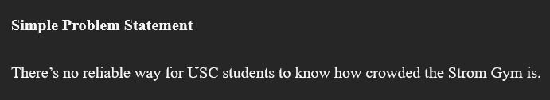

Highlighted Projects
Problem Statement
There is no reliable way for USC students to know how crowded the Strom Gym is.
Affinity Diagram

Text describing the diagram
Sketches

The three sketches for the Strom Gym app illustrate how USC students can plan, access, and track their workouts efficiently. The first sketch focuses on checking gym crowd levels and setting reminders for less busy times. The second sketch shows how students can log in, link their Carolina Card, and check in to the gym quickly. The third sketch highlights how users can track workouts, view progress, and set new fitness goals, helping them stay motivated and organized.